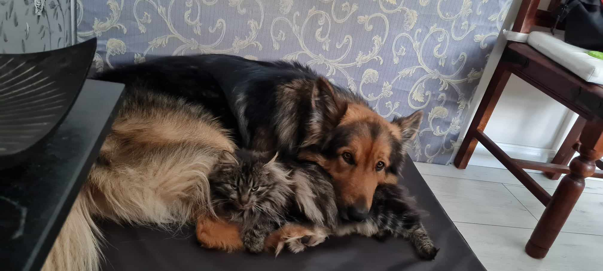

August 26
My brain!
It feels like my head is too small for my brain. I'm almost certain that the contents inside my scull will spill out.
The worst part right now is that I don't know how to tidy up all the mess I've made.
August 27
Ok, now I realised that Git bash is a little easier to use when committing. The saving, stageing and committing is still very confusing. Too many functions in VS code. I don't really have the time to experiment with code, nor write in my log right now because I need to find out how to submit this to github. And understand how to use VS code.
August 28
Got feedback on my assingnment today. Thankful for that, but it gave me more to think about. I have changed the name of my folder so it follows the instruktione. At least I think it does.
I spoke to Saskia today and realised that I hadn't checked out the videos in Teams. So I could have saved myself some grief if I'd paid attention. Well now I have checked them out and it made a lot of stuff clearer.
I still have a lot of questions though. I would like to tidy up some of the mistakes I've made. I dont like having to see folders om my git hub that I won't use. Where is the delete button?
I have to start writing down all the questions I have so I remember to add them to this journal. Now I don't remember them. And I have to start experimenting with some code so I don't forget all the things that I have already learned.
